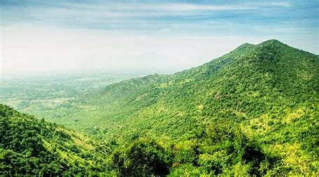
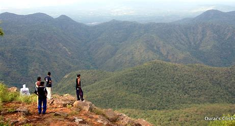

Sirumalai (Tamil: சிறுமலை) is a region of 60,000 acres (200 km2) situated 25 km (16 mi) from Dindigul, 90 km (56 mi) from Madurai, and 125 km from Trichy, Tamil Nadu, India. There are many high hills in the area. Sirumalai range is the last mountain range of the Eastern Ghats. The last mountains of the Sirumalai mountain range are the Azhagar Kovil Hills which are present in Madurai District. Azhagar Kovil Hills are the most important place of worship for the Hindu religion. Tracking is allowed in the Azhagar Kovil Hills. Sirumalai is a dense forest region with a moderate climate throughout the year. With an altitude of 1600 metres above sea level, it contains diversified flora and fauna. The hill has 18 hairpin bends. On the 18th bend are a church and a viewpoint of Dindigul city and the Dindigul Rock Fort. The famous Sirumalai banana is slowly disappearing from disease, which scientists have been unable to prevent. Man-made fires on the hills have destroyed medicinal plants and threatened the fauna habitat. Fires are often set to promote vegetation growth used for animal fodder, clear land for cultivation, or improve access to timber.
Sirumalai Hills

| Sirumalai Hills | |
|---|---|
|  | |
| Highest Peak | |
| Elevation | 1093m / 3586feet |
| Coordinates | 10°11'39.28"N 77°59'48.14"E |
| Geography | |
| Location | India |
| Borders on | Tamil Nadu |